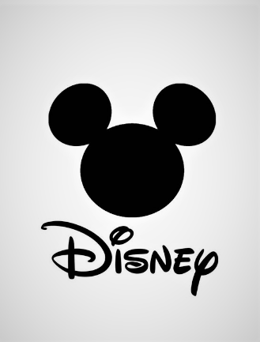

Información
Nuestra pagina web se basa en la tecnologia y el efuerzo que tienen estas cintas de la pantalla grande para omplmentar una historia basada en los pensamientos de las personas quienes hacen posoble un trabajo como lo es la animacion y la preparacion que llevva este tipo de trabajos que o solo son de entretenimiento sino tambien nos enseñan como la tecnologia el fuerzo, la dedicacion, la preracion que llevan al presentar una historia llena de mesajes y sueños y valores que representan estos dibujoa nimados llavados a la vida con las trasendencias de la animacion computarizada.

Información
Si la animación es un método, su objetivo será transformar, renovar y enriquecer a la sociedad a través del individuo. Si la animación es una técnica, su objetivo será la creatividad, la innovación, la iniciativa de los sujetos para poder satisfacer sus necesidades e inquietudes personales y colectivas.
